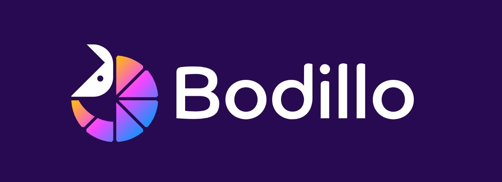

Assistant developer
Bodillo is a WordPress site that was handed over to me while still in its Quality Assurance phase. During QA, developers are responsible for addressing tickets and fixing any bugs or design issues identified by the QA team. At Offshorly, we are dedicated to developing high-quality websites, and our developers strive to resolve all QA tickets before a website is deployed.
As a junior developer at Offshorly, I learned to be flexible and adaptable to any website or task assigned to me. Working on Bodillo was challenging because I had no prior knowledge of the website. Through this experience, I learned the importance of being prepared not only to build websites from scratch but also to continue and complete unfinished projects.
After addressing all the QA tickets, I was also given the responsibility of deploying the website. This was my first experience with website deployment, and I was guided by our senior developer. Unfortunately, the Bodillo website is no longer active on the domain where it was hosted.
As a junior developer working on the Bodillo website, I was mainly tasked to work on these responsibilities:
Work on QA tickets sent by the QA team. This involves solving website bugs, fixing cross-browser issues, and adjusting blocks for website responsiveness.
Deploying the website using Siteground, accomplishing deployment checklist to make sure everything is working on live, and pointing the website to the right domain.
Clients usually still have some things they want to change even after deployment. Working on their requests also became part of my responsibility.
Here are the main blocks and pages I fixed and improved when closing QA tickets: